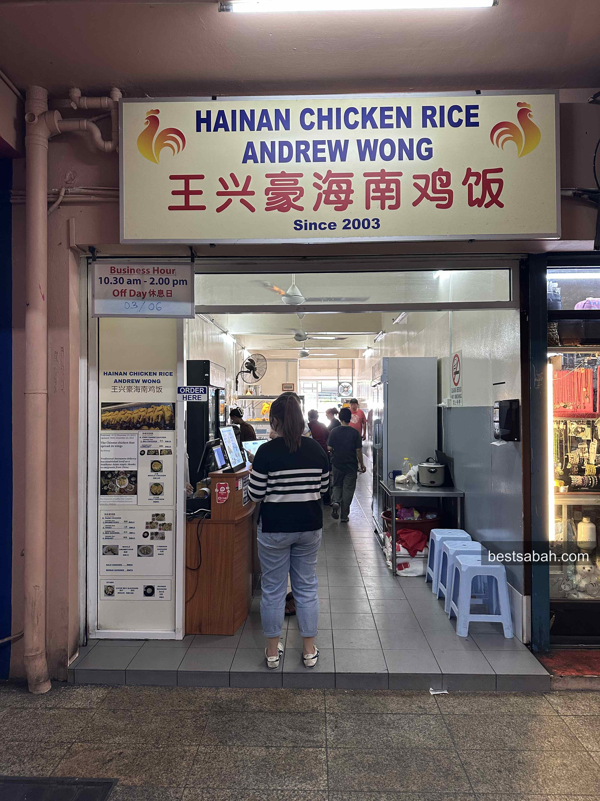
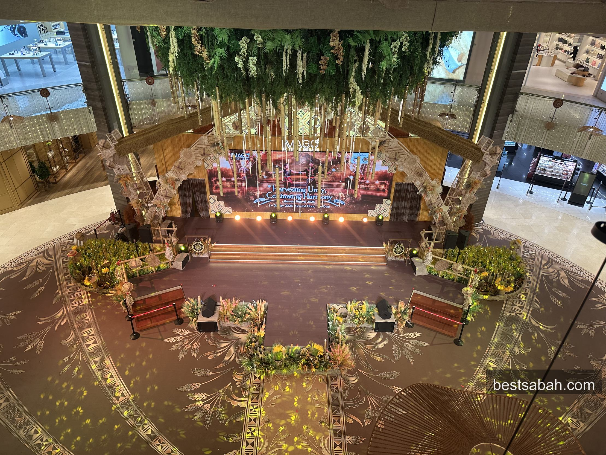
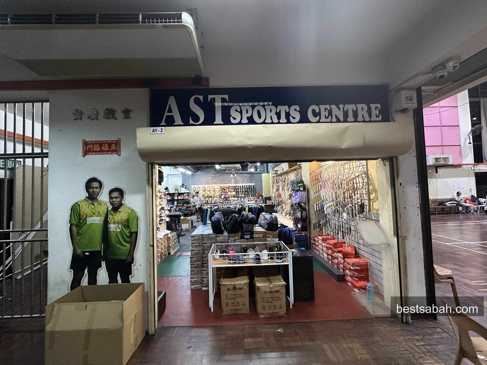
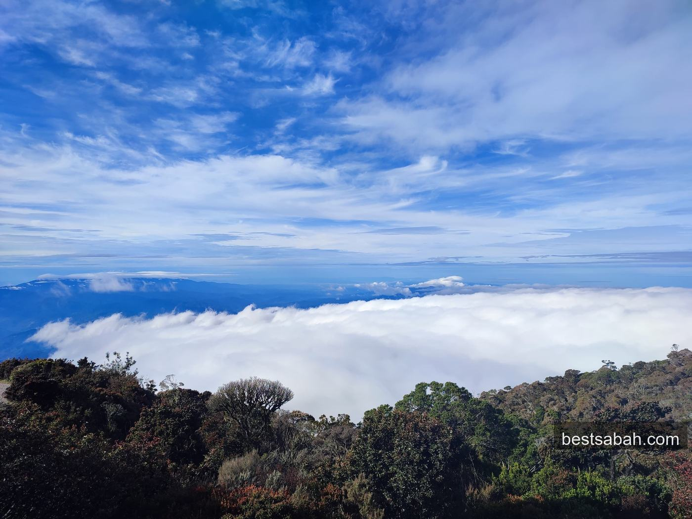
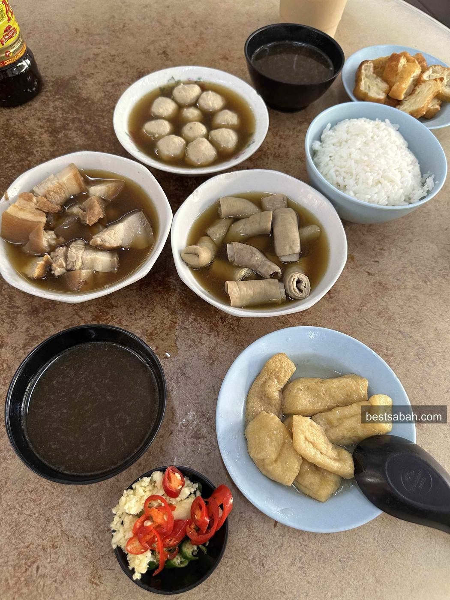
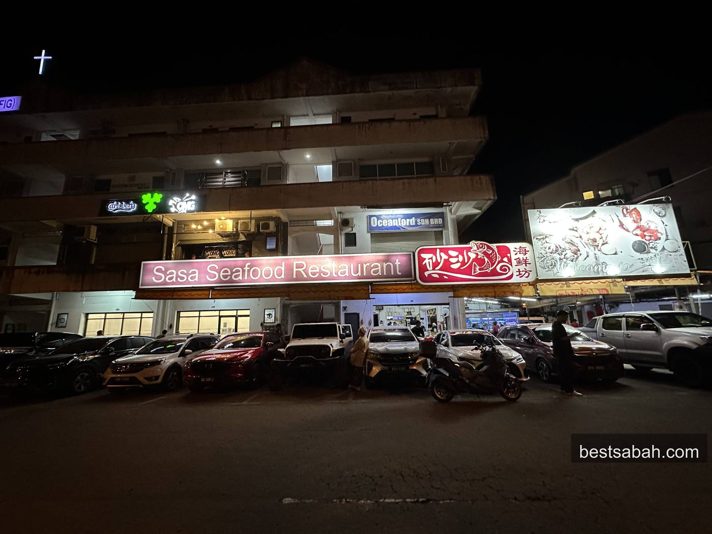
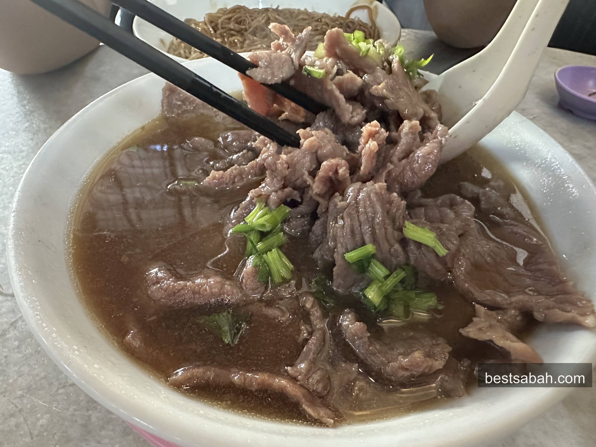

Food, travel, fitness and real life from KK

Hidden in Damai Plaza. Massive portions, juicy chicken, and a ginger sauce worth the drive.

Clean, well managed, great brands and solid food. The only mall answer you need in KK.

Decades in the game. Cheapest prices. Best stringing in KK. Right next to the Foochow courts.

Booking, training, Kampung Adidas, and what it actually feels like standing at 4,095m.

Deep herbal broth, fall-off-the-bone pork, free soup refills. Yu Kee on Jalan Gaya is the answer.

Fresh from the tank, cooked fast, priced right. Around RM40 per head for a full spread.

RM14 for a huge bowl of clear beef soup. Proper toppings. Yii Siang has been doing this right for years.